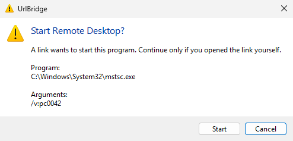

UrlBridge
UrlBridge lets a web page open a local program on Windows through a custom URL protocol, for example bridge-rdp://pc0042 → mstsc.exe /v:pc0042.
Which protocols exist, which program each one starts and which values are allowed is defined by an administrator in a single configuration file. Everything that arrives in a link is treated as hostile input: it is validated strictly, it can only fill placeholders in fixed arguments, and nothing starts without your confirmation.
Feedback and bug reports are welcome as issues; please report security problems as described in SECURITY.md. Not affiliated with or endorsed by Microsoft. Windows is a trademark of the Microsoft group of companies.

Features
- Any number of custom URL protocols, each mapped to one program with fixed arguments
- Strict built-in value types instead of free text (
host,hostname,ipv4,integer,token,choice) - Confirmation dialog before every start, showing the program and its full arguments
- No shell, no
ShellExecute, noPATHlookup - Refuses to run if the configuration, UrlBridge itself or a local target program can be modified by standard users
- Every start, cancellation and rejected link is written to the Windows event log
- Installation by PowerShell script, suitable for software distribution
- No network access, no telemetry (see Privacy)
Installation
Download UrlBridge-<version>-windows-x64.zip from Releases and extract it. Installation requires administrator rights; UrlBridge is always installed for all users.
The program is not signed, so SmartScreen or your antivirus may warn. The ZIP has a .sha256 file to verify the download, and the release notes link a VirusTotal scan. Changes are listed in the changelog.
- Write your configuration based on
UrlBridge.example.json(see Configuration). - Run the installer from an elevated Windows PowerShell:
powershell.exe -ExecutionPolicy Bypass -File .\Install.ps1 -ConfigPath .\UrlBridge.jsonThe script
- copies the program to
C:\Program Files\UrlBridge(an existing configuration is kept if-ConfigPathis omitted), - runs
UrlBridge.exe --validateand stops on errors; a previous installation is restored in that case, - registers every configured protocol under
HKLM\Software\Classesand removes protocols that are no longer configured (it never overwrites a protocol that belongs to another program), - creates the event log source
UrlBridge, - adds an entry under Settings → Apps for inventory and uninstallation.
Run it again to apply a changed configuration or to update the program. Uninstall.ps1 removes the program, its protocols, the event log source and the entry under Settings → Apps, which runs the same script.
Both scripts also work from a 32-bit host such as a software distribution client; they restart themselves in 64-bit PowerShell.
Exit codes of the scripts
| Code | Meaning |
|---|---|
| 0 | Success |
| 1 | No administrator rights or invalid parameters |
| 2 | Configuration invalid (--validate failed) |
| 3 | Copying failed |
| 4 | Registration failed, e.g. the protocol belongs to another program |
Usage
Clicking a link such as bridge-rdp://pc0042 in the browser starts UrlBridge. It shows a confirmation with the protocol, program and arguments; the program starts only after you confirm. Cancel is the default button. If the link is rejected, the target program is missing or the configuration is invalid, a short message says so and nothing starts.
From a console:
| Command | Effect |
|---|---|
UrlBridge.exe <url> | Validate, ask for confirmation, start |
UrlBridge.exe --test <url> | Show the program and arguments that would be started, start nothing |
UrlBridge.exe --validate | Check the whole configuration and list all problems |
UrlBridge.exe --version | Show the version |
UrlBridge.exe --help | Show the help; without parameters UrlBridge does nothing else |
UrlBridge is a window application, so a console does not wait for it. In scripts, use Start-Process -Wait -PassThru and read ExitCode:
| Code | Meaning |
|---|---|
| 0 | Started, or check passed |
| 1 | Invalid command line |
| 2 | Configuration invalid or unsafe (permissions) |
| 3 | Link rejected |
| 4 | Cancelled by the user |
| 5 | Program not found or could not be started |
Browser prompts
Edge and Chrome ask before opening an external protocol ("This site is trying to open UrlBridge"). To skip that prompt for trusted sites, set the browser policy AutoLaunchProtocolsFromOrigins by group policy (ADMX templates for Edge and Chrome), for example:
[{ "protocol": "bridge-rdp", "allowed_origins": ["https://intranet.example.com"] }]The policy applies per protocol and per origin; protocols that are not listed keep the browser prompt. The install script deliberately does not set browser policies. UrlBridge still asks for confirmation before every start.
Configuration
The configuration is C:\Program Files\UrlBridge\UrlBridge.json; its location cannot be changed. UTF-8 without BOM, at most 64 KiB, at most 64 protocols with 32 arguments and 8 parameters each.
{
"protocols": [
{
"scheme": "bridge-rdp",
"name": "Remote Desktop",
"program": "C:\\Windows\\System32\\mstsc.exe",
"arguments": ["/v:{host}"],
"parameters": [
{ "name": "host", "type": "host" }
]
}
]
}If the configuration is invalid or unsafe, nothing starts, not even the protocols that are correct. Every call runs the same check as --validate.
A target program that does not exist on a computer is not an error of the configuration: --validate only warns, the other protocols keep working, and a link to the missing program shows a message that it was not found.
The parser is strict: duplicate keys, unknown fields, comments, trailing commas and missing required fields are errors.
| Field | Required | Rules |
|---|---|---|
protocols[].scheme | yes | Lowercase letters, digits, -, ., +; starts with a letter; 3–64 characters; unique; never a well-known scheme such as http, https, file, mailto or ms-*; must not start with url, because Windows does not open such protocols |
protocols[].name | yes | 1–64 characters; shown in the confirmation dialog and in the registry |
protocols[].program | yes | Absolute path to an .exe, local (C:\…) or UNC (\\server\share\…). Local programs must be on a fixed drive. Not allowed: mapped drive letters, environment variables, .., \\?\, \\.\ |
protocols[].arguments | yes | Fixed arguments; {name} placeholders only for declared parameters, each parameter used at least once |
protocols[].parameters | yes | Ordered list; defines number and order of the values in the link |
parameters[].name | yes | Letters and digits, starts with a letter, 1–32 characters |
parameters[].type | yes | See value types |
parameters[].min, max | for integer | Allowed range, 0–4294967295 |
parameters[].maxLength | for token | 1–256 |
parameters[].values | for choice | Fixed list of 1–64 allowed values |
Link format
scheme://value1/value2/…
- The number of values must match the number of parameters exactly. A single trailing
/is ignored. - Rejected: query (
?), fragment (#), user info (@), empty values, links longer than 2048 characters. - Percent-encoding is decoded exactly once before validation; invalid encoding or invalid UTF-8 is rejected.
- The command line must contain exactly one argument after the program; anything else is rejected.
Value types
| Type | Allowed |
|---|---|
hostname | DNS name: A–Z a–z 0–9 - .; labels 1–63, total 1–253 characters; no - at the start or end of a label; no empty labels |
ipv4 | Four decimal numbers 0–255 without leading zeros |
host | hostname or ipv4 |
integer | Decimal number without sign or leading zeros, within min–max |
token | A–Z a–z 0–9 - _, length 1–maxLength |
choice | Exactly one of values (case-sensitive) |
Regardless of the type, a value consists only of A–Z a–z 0–9 - _ ., has 1–256 characters and never starts with -. Spaces, quotes, slashes, backslashes, %, control characters and anything outside ASCII are always rejected. Values can therefore neither break out of an argument nor add options of their own.
How it works
Windows starts UrlBridge.exe "<link>" for every link to a registered protocol. Each call is a separate short process: load and check the configuration and permissions, parse and validate the link, build the argument list, check the target program, ask for confirmation, start the program, write an event log entry, exit. There is no background process and no communication between processes.
Threat model
- A web page. Any page can trigger a link to a registered protocol. Everything in the link is hostile input; validation and the confirmation dialog protect against it. Browsers pass special characters percent-encoded, and Edge does not open links with raw quotes or spaces at all; UrlBridge does not rely on either.
- A user or process without administrator rights trying to change the configuration, UrlBridge, a target program or their folders, or to redirect them through drive letters, environment variables,
PATHor DLLs placed next to the program. - Not covered: administrators. Whoever can write to
C:\Program Filesdoes not need UrlBridge to run programs. A user can also register a protocol of the same name for their own account only, which affects nobody else.
Starting programs
CreateProcessWwith an explicit program path; no shell, noShellExecute, noPATHlookup. The working directory is the program's folder.- Only
.exefiles.CreateProcessWsilently runs.batand.cmdthroughcmd.exe, whose own command line parsing could undo the validation, and batch files cannot be signed. - Interpreters such as
cmd.exe,powershell.exeorwscript.exeare allowed, because a block list is trivially bypassed by copying or renaming and only administrators can change the configuration.--validatewarns about them: with an interpreter, values can turn into code. - UrlBridge loads its own libraries only from the Windows system folder.
Permission check
On every call and during --validate, for the configuration, UrlBridge itself and local target programs; the program of the called protocol is checked again right before the confirmation.
- Only SYSTEM, Administrators and TrustedInstaller may be able to modify the file (write, append, delete, change permissions or owner) and the folder that contains it (the same, plus creating files or subfolders, to prevent DLL planting).
- In every folder above that, up to the drive root, nobody else may delete or rename entries or change permissions or owner, so that no folder on the path can be swapped. Creating new folders there is tolerated, because Windows allows it on
C:\by default. - The owner must be one of these as well. Inherit-only entries such as
CREATOR OWNERare ignored. - Permissions that cannot be read count as a failure.
- Programs on network shares (UNC paths) are not checked. Write access there is managed on the file server, often with time-based or just-in-time permissions that UrlBridge cannot evaluate; protecting the share is the file server administrator's responsibility.
Event log
Source UrlBridge in the Application log, with the Windows user of the call. There is no log file.
| Event ID | Level | Meaning |
|---|---|---|
| 1 | Information | Program started (protocol, program, arguments, link) |
| 2 | Information | Cancelled by the user |
| 3 | Warning | Link rejected, with reason |
| 4 | Error | Configuration invalid, nothing started |
| 5 | Error | Program not found or could not be started |
Privacy
UrlBridge has no network access of its own. It sends and retrieves nothing and does not check for updates. Programs on network shares are read by Windows like any other file. The event log records the Windows user, the protocol, the values and the program of each call.
License
Release packages include THIRD-PARTY-LICENSES.txt with the licenses of all third-party components built into UrlBridge. The CI fails if a dependency uses a license that is not on the allow list in scripts/third_party_licenses.py.